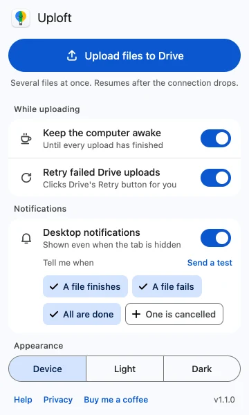

Does Google Drive keep uploading when my computer sleeps?
Published · Updated · By Sai Nath
No. A sleeping computer stops sending data, so a Google Drive upload pauses or fails until it wakes. A dimmed or switched-off screen is different: the computer can keep uploading. To keep an upload going, stop the computer sleeping from inactivity. Closing a laptop lid or choosing Sleep still sleeps it.
This guide comes from the maker of Uploft, the Chrome extension mentioned below. Google's steps link to Google's own pages and were checked on 29 October 2026; what the extension does comes from its source code.
Why does sleep stop an upload?
Because the upload is work the computer does, and a sleeping computer does none. An upload you start on drive.google.com is sent by that web page in Chrome, so when the computer sleeps the page stops sending. What happens next depends on how long it sleeps and what the connection does on waking. The upload may continue, show an error, or need a retry.
Not every kind of rest is sleep. The screen turning off, the screen locking and the computer sleeping are three different things, and only the last stops the upload.
What happens if the screen turns off or the computer is locked?
A screen that turns off or dims does not by itself stop an upload. Chrome's power API, which the extension uses, describes its "system" level as preventing the system from sleeping "in response to user inactivity". Its separate "display" level is the one that also keeps the screen from dimming or turning off. The extension asks for the "system" level, so the display can switch off while the computer carries on uploading.
Whether a locked screen stops anything depends on the computer's own settings, because locking and sleeping are separate settings. If the upload stops soon after a lock, check the sleep timer rather than the lock.
What happens if I close the lid?
On most laptops, closing the lid puts the computer to sleep, and the upload stops. Chrome's documentation for keep-awake covers only sleep "in response to user inactivity". It does not say it overrides the lid, and the extension cannot do so. What a closed lid does is the operating system's decision and differs between computers, power sources and settings. If an upload has to run with the lid closed, check how your computer behaves before relying on it, or leave the lid open and turn the screen down.
Do my power settings matter?
Yes. The computer's own sleep timer decides when it sleeps from inactivity, and that is the timer a keep-awake request holds off. On a laptop, battery and mains power often have separate timers, so an upload that survives on a charger can stop on battery. Set the sleep timer longer, or plug in, for a long upload. The settings are in the operating system's power or battery options; their names differ between Windows and macOS and between versions.
A computer that is shut down or restarted also ends a browser upload.
How does Uploft keep the computer awake?
Uploft is a free Chrome extension (Chrome 116 or later). While uploads are running it asks Chrome to stop the computer sleeping from inactivity, and it releases that request when they finish. The setting is on by default.
- Click the extension's toolbar icon.
- Under While uploading, find Keep the computer awake.
- Leave it on, or turn it off if you would rather the computer slept.
This works for uploads you start on drive.google.com, where the extension watches Drive's upload panel, and for uploads sent from the extension's own uploader (toolbar icon, then Upload files to Drive, then sign in with Google). It also marks the uploading Drive tab so Chrome does not discard it to save memory.

What happens after the computer wakes?
It depends on where the upload was running. In the extension's own uploader, Drive's resumable uploads let it ask Drive how much of the file arrived and continue from that byte. A piece that moves no bytes for 60 seconds is restarted, and time spent offline does not count as a failed try. In the uploader, a file that was part-sent before sleep is therefore sent again from where Drive stopped, not from zero. How an upload started in Drive's own tab behaves after a long sleep is not described by Google; if it fails, the extension clicks Drive's Retry button after 5, 20 and 60 seconds, but that only helps if the tab itself survived. See why uploads keep stopping and whether Drive can upload in the background.
What are the limits?
- Closing a laptop lid, choosing Sleep, shutting down or restarting still ends the upload or pauses it. The extension only prevents sleep from inactivity, as Chrome's power API describes it.
- If a laptop runs out of battery, nothing keeps it awake.
- For uploads that do not depend on a Chrome tab at all, Google makes Google Drive for desktop, which syncs files from a folder on the computer. It still needs the computer awake to send data.
- The extension runs in Chrome on a computer, not on phones, and is not on the Chrome Web Store yet.
Uploft is free, and its source code is public. It is not on the Chrome Web Store yet; the home page shows what it does and what it asks for.
Sources
Checked on 29 October 2026.
- Chrome for Developers: chrome.power API (keep-awake levels).
- Google Chrome Help: Personalize Chrome performance (Memory Saver).
- Google Drive Help: Use Google Drive for desktop.
- Google for Developers: Manage uploads, including resumable uploads.
- Uploft: source code (keep-awake, retry and upload engine).